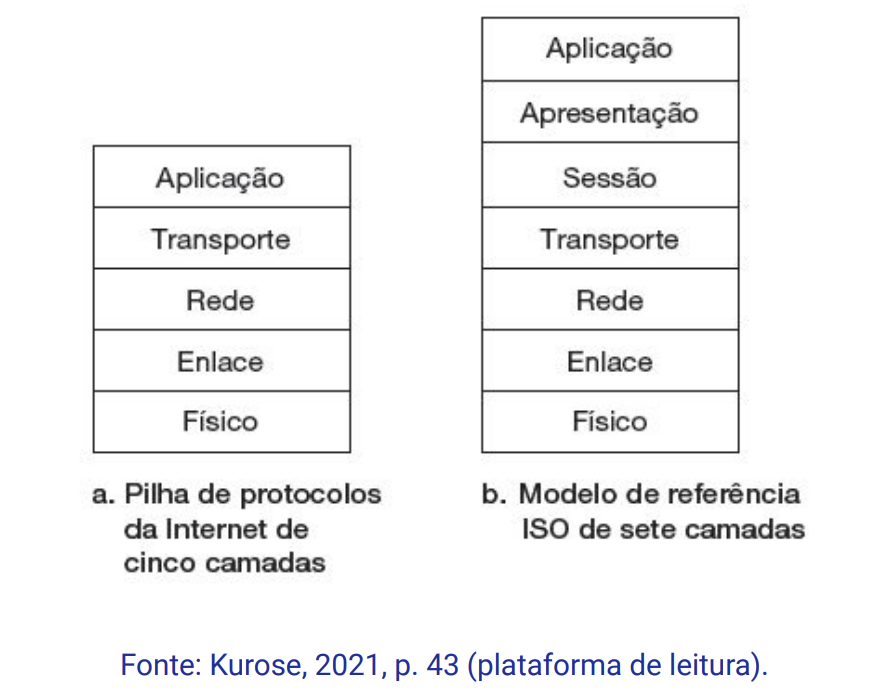
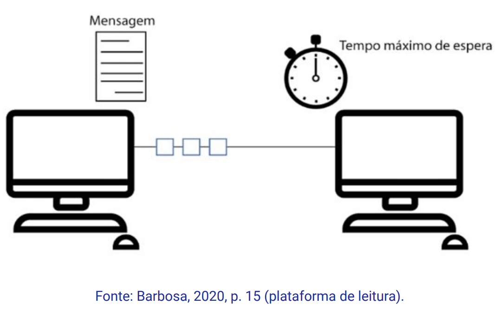
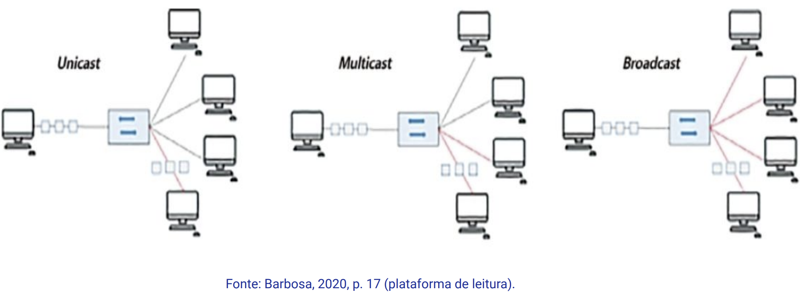
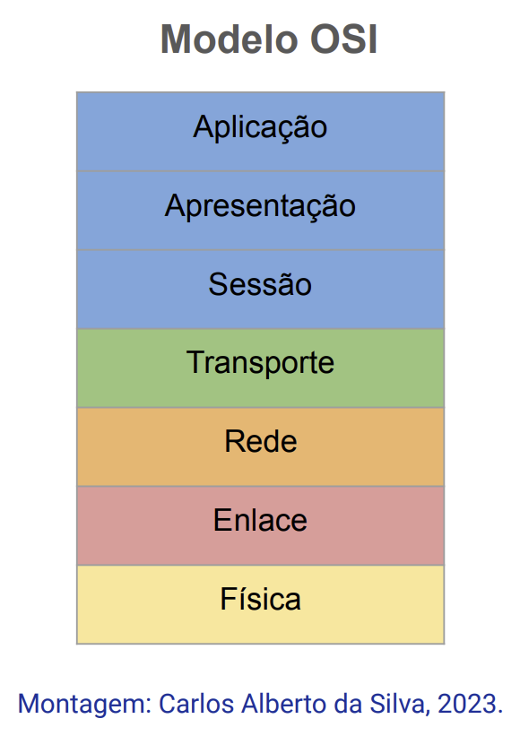
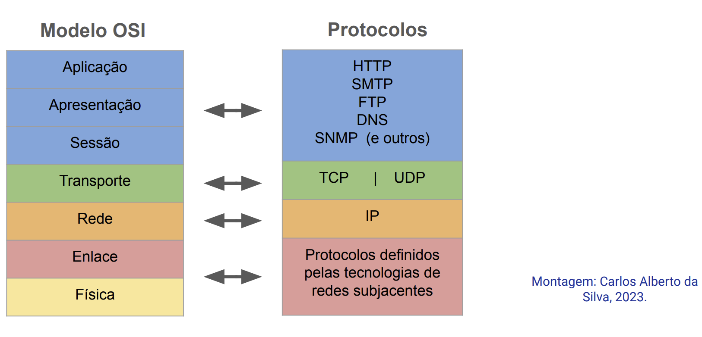

Disciplinas
INFRAESTRUTURA PARA SISTEMAS DE SOFTWARE-T01-2024-2 Concluído
Materiais
Vídeo 1 - [UFMS Digital] Infraestrutura para Sistemas de Software - Módulo 1 - Unidade 2 - Arquitetura dos protocolos em camadas sendProf.° ministrante: Carlos Alberto da Silva
Conteúdo
Arquitetura dos protocolos em camadas
- Compreender protocolos
- Modelo OSI e seus níveis
- Modelo TCP/IP e seus níveis
Compreender protocolos.
ProtocolosOs protocolos de comunicação em redes são responsáveis por realizar a comunicação entre dispositivos que estejam conectados a uma rede.
Um protocolo é um conjunto de regras que gerencia a comunicação de dados.
Exemplo de pilhas de protocolos
Os elementos que compõem um protocolo são:
- sintaxe: representa a estrutura ou o formato dos dados e a ordem em que eles são apresentados.
- semântica: representa o significado de cada seção de bits.
- sincronismo: representa quando os dados devem ser enviados e com que agilidade podem ser enviados.
Normas internacionais RFC (Request for comment):
- Transmission Control Protocol (TCP) – RFC 793
- Internet Protocol (IP) - RFC 791
Padronizando a comunicação entre os dispositivos das redes para:
- codificação de mensagens;
- formatação e encapsulamento da mensagem;
- tamanho da mensagem;
- tempo da mensagem;
- opções de envio da mensagem.
Um protocolo define o padrão/forma de como será a comunicação entre os dispositivos das redes.
Um dispositivo conectado na rede tem a opção de envio de uma mensagem para:
- uma pessoa (unicast);
- um grupo de pessoas (multicast);
- todos os computadores conectados à rede (broadcast).
Opções de envio da mensagem:
 Protocolos de redes- Um conjunto de protocolos pertence a uma camada.
- cada camada possui funções específicas;
- fornecendo serviços para a camada superior e utilizando serviços da camada inferior.
Modelo OSI e seus níveis.
O modelo Open System Interconnection (OSI) é uma estrutura em camadas criada para atender projetos de rede:
- Tem por objetivo facilitar a comunicação entre sistemas de computador por meio de um conjunto de protocolos entre sistemas diferentes;
- Não há necessidade de alteração na lógica do hardware e do software subjacentes.
O modelo OSI não deve ser considerado como um protocolo.
⇒ mas como um arquétipo com a finalidade de assimilar e delinear uma arquitetura de rede flexível.
 Camada de AplicaçãoTipo de comunicação
E-mail; transferência de arquivos,
cliente/servidor Camada de ApresentaçãoCriptografia
Conversão de código (ASCII para EBCDIC)
Camada de SessãoInício e término de sessão.
Controle de sequência.
Camada de TransporteAssegura a transmissão fim-a-fim dos arquivos e mensagens.
Camada de RedeEncaminha os dados para diferentes LANs e WANs baseado no endereço/rede.
Camada de Enlace de DadosTransmite os pacotes de um nó de rede para outro baseado no endereço da estação.
Camada FísicaSinais elétricos e características mecânicas da transmissão de bits.
Protocolos de cada camada Modelo TCP/IP e seus níveis
No contexto da Guerra Fria, os cientistas norte-americanos desenvolveram a Arpanet (rede de armazenamento de informações de pesquisa de forma virtual).
A Arpanet, antecessora da internet.
- De 1974-1983, o protocolo TCP/IP foi proposto como um conjunto de protocolos para:
- roteamento entre diferentes redes;
- com independência para redes e subredes;
- e recuperação de falhas.
Um protocolo da camada TCP/IP se comunica utilizando o modelo Cliente-Servidor, onde:
- A camada Aplicação trata de Mensagens;
- A camada Transporte trata de Segmentos;
- A camada Internet trata de Pacotes;
- A camada de Enlace trata de Quadros;
- e camada Física trata de Bits.
Os modelos de referência OSI e TCP/IP têm semelhanças e diferenças.
Tanto o modelo OSI quanto o modelo TCP/IP são baseados em pilhas de protocolos e as funções de cada camada são similares.
As diferentes tecnologias de redes de computadores fizeram cada modelo se adaptar a arquiteturas de hardware e sistemas operacionais diversos.
- O modelo OSI é um modelo conceitual que apresenta as funcionalidades de redes individuais.
- Já o modelo TCP/IP foi criado para solucionar problemas específicos.
- O modelo OSI contribuiu para que os conceitos de serviços, interfaces e protocolos fossem diferenciados.
- O modelo TCP/IP não define ao certo os conceitos de serviço, interface e protocolo.
- O modelo de camadas TCP/IP é usado para auxiliar a visualização da interação entre diversos protocolos.
- As redes e os equipamentos são planejados e construídos baseados em padrões (RFC's).
Referências:
BARBOSA, Cynthia S.; SERPA, Matheus S.; OLIVEIRA, Diego B.; SARAIVA, Maurício O. Arquitetura TCP/IP I. Editora Grupo A, 2020. p. 15-17. ISBN 9786556900766. Disponível na Biblioteca Digital da UFMS.
KUROSE, Jim; ROSS, Keith W. Redes de Computadores e a Internet: uma Abordagem Top-down, 8 Edição. Editora Pearson, 2021. ISBN: 9788582605592. p. 37-41. Disponível na Biblioteca Digital da UFMS.
TANENBAUM, Andrew S.; FEAMSTER, Nicholas; WETHERALL, David J.; Redes de Computadores, 6ª Edição. Editora Pearson, 2021. ISBN: 9788582605615. p. 30-46. Disponível na Biblioteca Digital da UFMS.